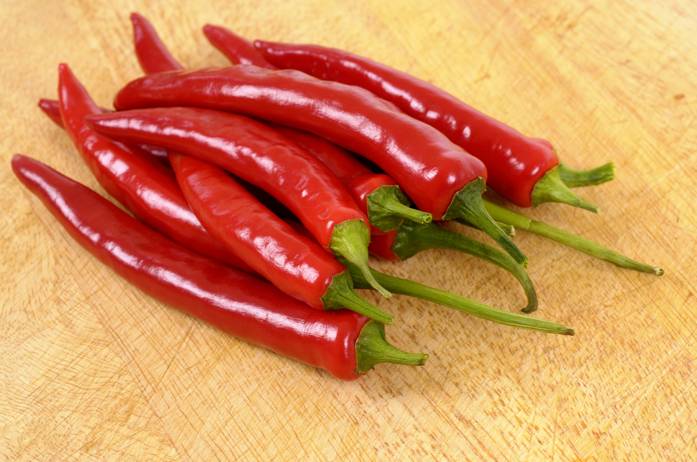
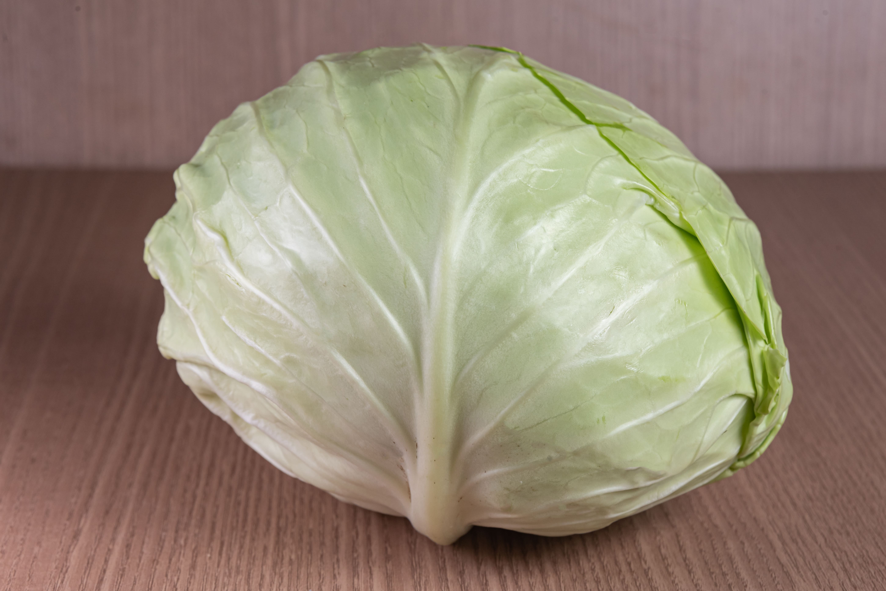
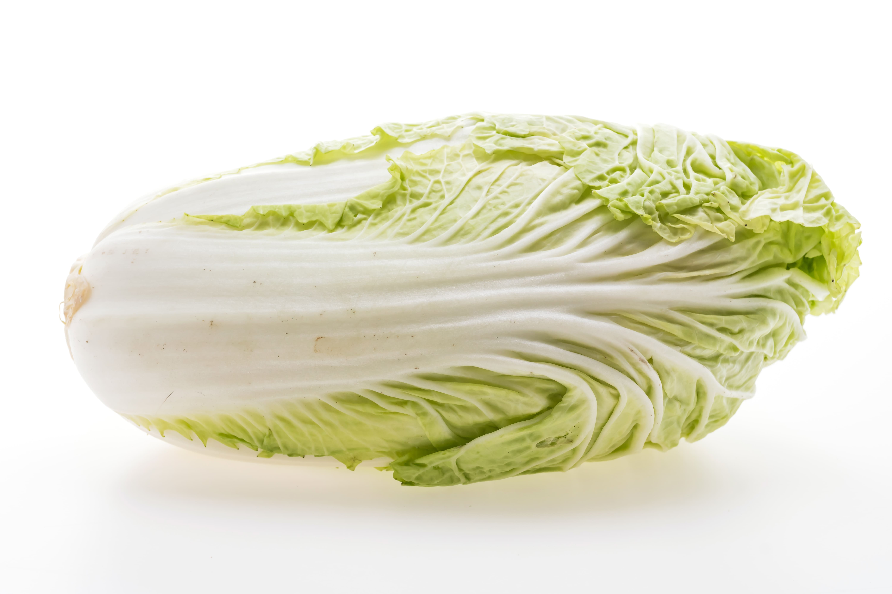
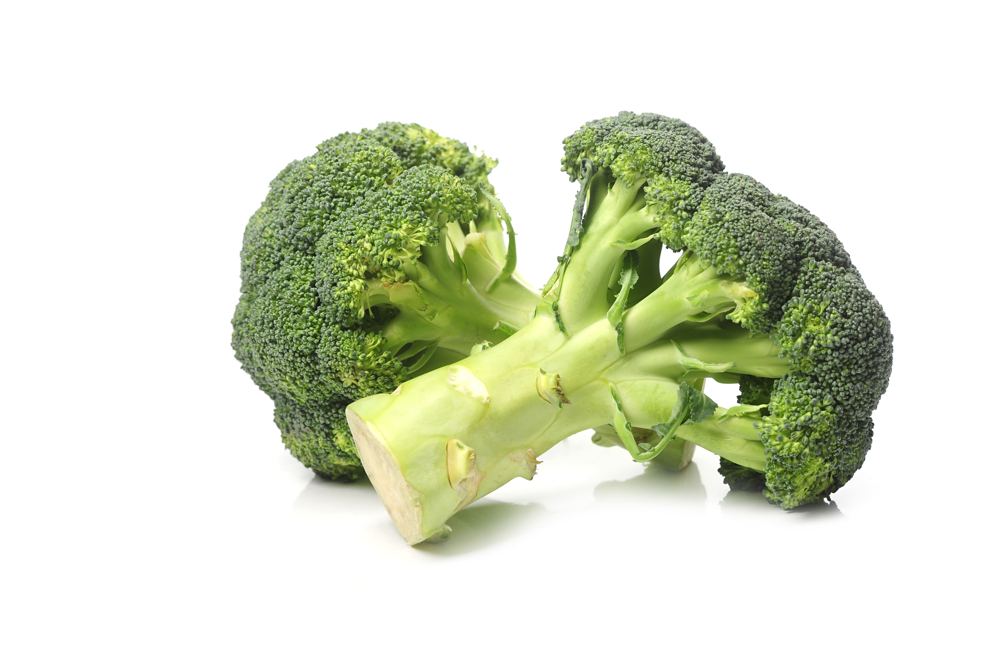
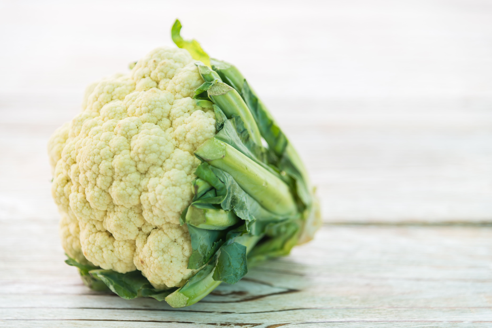

Cabai/Chilli
Warna:
Merah cerah/Hijau cerah, pastikan cabai berwarna cerah (mengkilap) dan hindari yang kusam/menghitam.
Tekstur:
Memiliki tekstur keras dan mudah dipatahkan, tidak layu/bertekstur lembek.
Kulit:
Cabai yang bagus memiliki kulit halus dan kencang, tidak keriput.
Aroma:
Memiliki aroma menyengat dan kuat, menandakan kesegaran.
Batang:
Masih memiliki batang yang berwarna kehijauan.

Kol/Cabbage
Warna:
Memiliki wana yang cerah, tidak pucat,kuning layu atau kecoklatan.
Tekstur:
Padat, renyah, tidak kopong, tidak lembek dan berlendir.
Kulit/daun:
Kulit/daun mudah patah, saling menempel dan kencang saat dipegang.
Aroma:
Memiliki aroma khas menandakan kesegaran dan tidak bau busuk.

Sawi Putih/Chinese Cabbage
Warna:
Memiliki wana hijau/kuning cerah, tidak pucat,kuning layu atau kecoklatan.
Tekstur:
Padat, renyah, tidak kopong, tidak lembek dan berlendir.
Kulit/daun:
Kulit/daun lembut tapi kokoh, saling menempel dan kencang saat dipegang.
Aroma:
Memiliki aroma khas menandakan kesegaran dan tidak bau busuk.
Batang:
Warna batang masih kelihatan segar dan tidak bintik-bintik menghitam.

Wortel/Carrot
Warna:
Memiliki warna orange cerah merata,tidak ada wanrna hijau/ungu di kulit.
Tekstur:
Renyah keras(bukan keras tua),tidak lembek, keriput dan berlendir.
Kulit/daun:
Memiliki kulit yang halus, tidak retak dan tidak ada lubang benyek.
Aroma:
Memiliki aroma kemanis manisan yang khas.
Batang:
Warna batang masih kelihatan segar dan kehijauan.

Pokcoy/Bok Choy
Warna:
Memiliki warna hijau cerah, tidak pucat,kuning layu atau kehitaman.
Tekstur:
Renyah, tidak lembek dan berlendir.
Kulit/daun:
Kulit/daun lembut tapi kokoh dan tidak benyek.
Aroma:
Memiliki aroma khas menandakan kesegaran dan tidak bau busuk.
Batang:
Warna batang masih kelihatan segar, tidak layu,tidak ada bintik hitam.
Rekomendasi:
Pakailah pokcoy hidrponik.

Daun Bawang/Leek
Warna:
Memiliki warna hijau cerah, tidak pucat,kuning layu atau kecoklatan.
Tekstur:
Renyah, kokoh, tidak lembek dan berlendir.
Aroma:
Memiliki aroma khas menandakan kesegaran.
Batang:
Warna batang putih bersih dan kelihatan segar, tidak layu,tidak ada keriput.
Akar:
Kalau daun bawang masih memiliki akar,pilih yang masih meiliki akar yang segar dan lembab,tidak kering.

Brokoli/Broccoli
Warna:
Memiliki warna hijau cerah, tidak pucat,kuning layu atau kecoklatan.
Tekstur:
Padat, kokoh, tidak lembek dan berlendir.
Aroma:
Memiliki aroma netral.
Batang:
Warna batang putih bersih/Hijau dan kelihatan segar, tidak layu,tidak ada keriput.

Kembang Kol/Cauliflower
Warna:
Memiliki warna putih bersih/krem cerah, tidak pucat,kuning layu atau kecoklatan.
Tekstur:
Padat, kokoh, tidak lembek, berbintik hitam dan berlendir.
Aroma:
Memiliki aroma netral.
Batang:
Warna batang putih bersih dan kelihatan segar, tidak layu,tidak ada keriput.